// type:
// S = xxx<...>::type
// V = xxx_v<...>
// T = xxx_t<...>
// B = xxx<...>
// values: S, V, T, SV, ST, SVT, B
#ifndef BENCH_TYPE
# define BENCH_TYPE SVT
#endif
#ifndef BENCH_STD
# define BENCH_STD 0
#endif
#ifndef BENCH_ALL
# define BENCH_ALL 0
#endif
#if BENCH_ALL && ! defined(NREPEAT)
# define NREPEAT 50
#endif
#ifndef BENCH_SHOW_SOURCE
# define BENCH_SHOW_SOURCE 0
#endif
#ifdef IN_IDE_PARSER
# define NREPEAT 0
#else
# ifndef NREPEAT
# define NREPEAT 500
# endif
#endif
#if BENCH_STD
# define NAMESPACE std
#else
# define NAMESPACE jln::mp::traits::emp
#endif
#if BENCH_SHOW_SOURCE
# if BENCH_STD
# include <type_traits>
# endif
# include <jln/mp/detail/unpack.hpp>
# include <jln/mp/detail/compiler.hpp>
#else
# include <jln/mp/algorithm/transform.hpp>
# include <jln/mp/algorithm/make_int_sequence.hpp>
# include <jln/mp/utility/stl_traits.hpp>
# include <type_traits>
#endif
#define PP_CONCAT(a, b) PP_CONCAT_I(a, b)
#define PP_CONCAT_I(a, b) a##b
#if BENCH_SHOW_SOURCE
# define BENCH_DECL(expr) \
PRINT expr [T = number<0>..number<NREPEAT>];
#else
# define BENCH_DECL(expr) \
namespace PP_CONCAT(n, __COUNTER__) { \
struct tt { template<class T> using f = expr; }; \
using l = jln::mp::emp::make_int_sequence_c<NREPEAT, \
jln::mp::transform<tt>>; \
}
#endif
#define BENCH_S(algo, values) \
BENCH_DECL(typename algo<JLN_MP_UNPACK values>::type)
#define BENCH_T(algo, values) \
BENCH_DECL(algo##_t<JLN_MP_UNPACK values>)
#define BENCH_V(algo, values) \
BENCH_DECL(jln::mp::number<algo##_v<JLN_MP_UNPACK values>>)
#define BENCH_B(algo, values) \
BENCH_DECL(algo<JLN_MP_UNPACK values>)
#define BENCH_ST(algo, values) \
BENCH_S(algo, values) \
BENCH_T(algo, values)
#define BENCH_SV(algo, values) \
BENCH_S(algo, values) \
BENCH_V(algo, values)
#define BENCH_0(algo, values)
#define BENCH_SELECT_ST_S BENCH_S
#define BENCH_SELECT_ST_V BENCH_0
#define BENCH_SELECT_ST_T BENCH_T
#define BENCH_SELECT_ST_SV BENCH_S
#define BENCH_SELECT_ST_ST BENCH_ST
#define BENCH_SELECT_ST_SVT BENCH_ST
#define BENCH_SELECT_ST_B BENCH_B
#define BENCH_SELECT_SV_S BENCH_S
#define BENCH_SELECT_SV_V BENCH_V
#define BENCH_SELECT_SV_T BENCH_0
#define BENCH_SELECT_SV_SV BENCH_SV
#define BENCH_SELECT_SV_ST BENCH_S
#define BENCH_SELECT_SV_SVT BENCH_SV
#define BENCH_SELECT_SV_B BENCH_B
#define BENCH_COND_1 1, 1, 1
#define BENCH_COND_II(x, b, ...) b
#define BENCH_COND_I(...) BENCH_COND_II(__VA_ARGS__)
#define BENCH_COND(def) BENCH_COND_I(PP_CONCAT(BENCH_COND_, def), 0, 0)
#define BENCH_SELECT_1_I(bench_filter, bench_accept) BENCH_SELECT_##bench_accept##_##bench_filter
#define BENCH_SELECT_10(bench_filter, bench_accept) BENCH_SELECT_1_I(bench_filter, bench_accept)
#define BENCH_SELECT_11(bench_filter, bench_accept) BENCH_0
#define BENCH_SELECT_00(bench_filter, bench_accept) BENCH_0
#define BENCH(bench_accept, algo, values, disable_name) \
PP_CONCAT(PP_CONCAT(BENCH_SELECT_, BENCH_COND(BENCH_##algo)), \
BENCH_COND(BENCH_##algo##_DISABLE_##disable_name)) \
(BENCH_TYPE, bench_accept)(NAMESPACE::algo, values)
template<class T>
struct X
{
enum class E : int;
};
template<class T, class U>
void swap(X<T>&, X<U>&) noexcept;
JLN_MP_DIAGNOSTIC_PUSH()
JLN_MP_DIAGNOSTIC_GCC_IGNORE("-Wundef")
#if BENCH_ALL
# define BENCH_is_const 1
# define BENCH_is_volatile 1
# define BENCH_is_trivial 1
# define BENCH_is_trivially_copyable 1
# define BENCH_is_abstract 1
# define BENCH_is_aggregate 1
# define BENCH_is_base_of 1
# define BENCH_is_class 1
# define BENCH_is_empty 1
# define BENCH_is_enum 1
# define BENCH_is_final 1
# define BENCH_is_polymorphic 1
# define BENCH_is_union 1
# define BENCH_is_signed 1
# define BENCH_is_unsigned 1
# define BENCH_is_bounded_array 1
# define BENCH_add_lvalue_reference 1
# define BENCH_add_rvalue_reference 1
# define BENCH_has_unique_object_representations 1
# define BENCH_is_void 1
# define BENCH_is_null_pointer 1
# define BENCH_is_integral 1
# define BENCH_is_floating_point 1
# define BENCH_is_array 1
# define BENCH_is_pointer 1
# define BENCH_is_lvalue_reference 1
# define BENCH_is_rvalue_reference 1
# define BENCH_is_reference 1
# define BENCH_is_function 1
# define BENCH_is_member_object_pointer 1
# define BENCH_is_member_function_pointer 1
# define BENCH_is_arithmetic 1
# define BENCH_is_fundamental 1
# define BENCH_is_object 1
# define BENCH_is_member_pointer 1
# define BENCH_is_scalar 1
# define BENCH_is_standard_layout 1
# define BENCH_is_compound 1
# define BENCH_is_convertible 1
# define BENCH_is_nothrow_convertible 1
# define BENCH_is_scoped_enum 1
# define BENCH_is_constructible 1
# define BENCH_is_default_constructible 1
# define BENCH_is_copy_constructible 1
# define BENCH_is_move_constructible 1
# define BENCH_is_trivially_constructible 1
# define BENCH_is_trivially_default_constructible 1
# define BENCH_is_trivially_copy_constructible 1
# define BENCH_is_trivially_move_constructible 1
# define BENCH_is_nothrow_constructible 1
# define BENCH_is_nothrow_default_constructible 1
# define BENCH_is_nothrow_copy_constructible 1
# define BENCH_is_nothrow_move_constructible 1
# define BENCH_is_assignable 1
# define BENCH_is_copy_assignable 1
# define BENCH_is_move_assignable 1
# define BENCH_is_nothrow_assignable 1
# define BENCH_is_nothrow_copy_assignable 1
# define BENCH_is_nothrow_move_assignable 1
# define BENCH_is_trivially_assignable 1
# define BENCH_is_trivially_copy_assignable 1
# define BENCH_is_trivially_move_assignable 1
# define BENCH_is_destructible 1
# define BENCH_is_trivially_destructible 1
# define BENCH_is_nothrow_destructible 1
# define BENCH_is_implicit_lifetime 1
# define BENCH_is_swappable 1
# define BENCH_is_nothrow_swappable 1
# define BENCH_is_swappable_with 1
# define BENCH_is_nothrow_swappable_with 1
# define BENCH_has_virtual_destructor 1
# define BENCH_is_same 1
# define BENCH_is_layout_compatible 1
# define BENCH_is_pointer_interconvertible_base_of 1
# define BENCH_alignment_of 1
# define BENCH_rank 1
# define BENCH_extent 1
# define BENCH_remove_const 1
# define BENCH_remove_volatile 1
# define BENCH_remove_cv 1
# define BENCH_remove_extents 1
# define BENCH_remove_all_extents 1
# define BENCH_remove_pointer 1
# define BENCH_remove_reference 1
# define BENCH_remove_cvref 1
# define BENCH_reference_constructs_from_temporary 1
# define BENCH_reference_converts_from_temporary 1
# define BENCH_add_pointer 1
# define BENCH_add_cv 1
# define BENCH_add_const 1
# define BENCH_add_volatile 1
# define BENCH_make_signed 1
# define BENCH_make_unsigned 1
# define BENCH_decay 1
# define BENCH_unwrap_reference 1
# define BENCH_unwrap_ref_decay 1
# define BENCH_invoke_result 1
# define BENCH_is_invocable 1
# define BENCH_is_invocable_r 1
# define BENCH_is_nothrow_invocable 1
# define BENCH_is_nothrow_invocable_r 1
# define BENCH_underlying_type 1
# define BENCH_common_type 1
# define BENCH_common_reference 1
#endif
BENCH(SV, is_const, (T), 0)
BENCH(SV, is_volatile, (T), 0)
BENCH(SV, is_trivial, (T), 0)
BENCH(SV, is_trivially_copyable, (T), 0)
BENCH(SV, is_abstract, (T), 0)
BENCH(SV, is_aggregate, (T), 0)
BENCH(SV, is_base_of, (T, T), 0)
BENCH(SV, is_class, (T), 0)
BENCH(SV, is_empty, (T), 0)
BENCH(SV, is_enum, (T), 0)
BENCH(SV, is_final, (T), 0)
BENCH(SV, is_polymorphic, (T), 0)
BENCH(SV, is_union, (T), 0)
BENCH(SV, is_signed, (T), 0)
BENCH(SV, is_unsigned, (T), 0)
#if ! BENCH_STD || __cpp_lib_bounded_array_traits >= 201902L
BENCH(SV, is_bounded_array, (T), 0)
#endif
BENCH(ST, add_lvalue_reference, (T), 0)
BENCH(ST, add_rvalue_reference, (T), 0)
BENCH(SV, has_unique_object_representations, (T), 0)
BENCH(SV, is_void, (T), 0)
BENCH(SV, is_null_pointer, (T), 0)
BENCH(SV, is_integral, (T), 0)
BENCH(SV, is_floating_point, (T), 0)
BENCH(SV, is_array, (T), 0)
BENCH(SV, is_pointer, (T), 0)
BENCH(SV, is_lvalue_reference, (T), 0)
BENCH(SV, is_rvalue_reference, (T), 0)
BENCH(SV, is_reference, (T), 0)
BENCH(SV, is_function, (T), 0)
BENCH(SV, is_member_object_pointer, (T), T)
BENCH(SV, is_member_object_pointer, (int T::*), MEM_T)
BENCH(SV, is_member_function_pointer, (T), T)
BENCH(SV, is_member_function_pointer, (int(T::*)()), MEM_T)
BENCH(SV, is_member_pointer, (T), T)
BENCH(SV, is_member_pointer, (int T::*), MEM_T)
BENCH(SV, is_arithmetic, (T), 0)
BENCH(SV, is_fundamental, (T), 0)
BENCH(SV, is_object, (T), 0)
BENCH(SV, is_scalar, (T), 0)
BENCH(SV, is_standard_layout, (T), 0)
BENCH(SV, is_compound, (T), 0)
BENCH(SV, is_convertible, (T, T), T)
BENCH(SV, is_convertible, (T&, T&), REF)
BENCH(SV, is_convertible, (T&, int), REF_FALSE)
#if ! BENCH_STD || __cpp_lib_is_nothrow_convertible >= 201806L
BENCH(SV, is_nothrow_convertible, (T, T), T)
BENCH(SV, is_nothrow_convertible, (T&, T&), REF)
BENCH(SV, is_nothrow_convertible, (T&, int), REF_FALSE)
#endif
#if ! BENCH_STD || __cpp_lib_is_scoped_enum >= 202011L
BENCH(SV, is_scoped_enum, (T), T)
BENCH(SV, is_scoped_enum, (typename X<T>::E), E)
#endif
BENCH(SV, is_constructible, (T), 0)
BENCH(SV, is_default_constructible, (T), 0)
BENCH(SV, is_copy_constructible, (T), 0)
BENCH(SV, is_move_constructible, (T), 0)
BENCH(SV, is_trivially_constructible, (T), 0)
BENCH(SV, is_trivially_default_constructible, (T), 0)
BENCH(SV, is_trivially_copy_constructible, (T), 0)
BENCH(SV, is_trivially_move_constructible, (T), 0)
BENCH(SV, is_nothrow_constructible, (T), 0)
BENCH(SV, is_nothrow_default_constructible, (T), 0)
BENCH(SV, is_nothrow_copy_constructible, (T), 0)
BENCH(SV, is_nothrow_move_constructible, (T), 0)
BENCH(SV, is_assignable, (T, T), 0)
BENCH(SV, is_copy_assignable, (T), 0)
BENCH(SV, is_move_assignable, (T), 0)
BENCH(SV, is_nothrow_assignable, (T, T), 0)
BENCH(SV, is_nothrow_copy_assignable, (T), 0)
BENCH(SV, is_nothrow_move_assignable, (T), 0)
BENCH(SV, is_trivially_assignable, (T, T), 0)
BENCH(SV, is_trivially_copy_assignable, (T), 0)
BENCH(SV, is_trivially_move_assignable, (T), 0)
BENCH(SV, is_destructible, (T), 0)
BENCH(SV, is_trivially_destructible, (T), 0)
BENCH(SV, is_nothrow_destructible, (T), 0)
#if ! BENCH_STD || __cpp_lib_is_implicit_lifetime >= 202302L
BENCH(SV, is_implicit_lifetime, (T), 0)
#endif
BENCH(SV, is_swappable, (T), 0)
BENCH(SV, is_nothrow_swappable, (T), 0)
BENCH(SV, is_swappable_with, (T&, T&), REF)
BENCH(SV, is_swappable_with, (X<T>&, X<T[1]>&), REF2)
BENCH(SV, is_nothrow_swappable_with, (T&, T&), REF)
BENCH(SV, is_nothrow_swappable_with, (X<T>&, X<T[1]>&), REF2)
BENCH(SV, has_virtual_destructor, (T), 0)
BENCH(SV, is_same, (T, T), 0)
// BENCH(SV, is_layout_compatible, (T, T), 0)
// BENCH(SV, is_pointer_interconvertible_base_of, (T, T), 0)
BENCH(SV, alignment_of, (T), 0)
BENCH(SV, rank, (T), T)
BENCH(SV, rank, (T[1]), ARRAY)
#if BENCH_STD
# define EXTENT_NAME extent
#else
# define EXTENT_NAME extent_c
#endif
BENCH(SV, EXTENT_NAME, (T), T)
BENCH(SV, EXTENT_NAME, (T[1]), ARRAY)
BENCH(ST, remove_const, (T), 0)
BENCH(ST, remove_volatile, (T), 0)
BENCH(ST, remove_cv, (T), 0)
BENCH(ST, remove_extent, (T), 0)
BENCH(ST, remove_all_extents, (T), 0)
BENCH(ST, remove_pointer, (T), 0)
BENCH(ST, remove_reference, (T), 0)
#if ! BENCH_STD || __cpp_lib_remove_cvref >= 201711L
BENCH(ST, remove_cvref, (T), 0)
#endif
#if ! BENCH_STD || __cpp_lib_reference_from_temporary >= 202202L
BENCH(ST, reference_constructs_from_temporary, (T&, T&), 0)
#endif
#if ! BENCH_STD || __cpp_lib_reference_from_temporary >= 202202L
BENCH(ST, reference_converts_from_temporary, (T&, T&), 0)
#endif
BENCH(ST, add_pointer, (T), 0)
BENCH(ST, add_cv, (T), 0)
BENCH(ST, add_const, (T), 0)
BENCH(ST, add_volatile, (T), 0)
BENCH(ST, make_signed, (typename X<T>::E), 0)
BENCH(ST, make_unsigned, (typename X<T>::E), 0)
BENCH(ST, decay, (T), T)
BENCH(ST, decay, (T&), REF)
#if (! BENCH_STD || __cpp_lib_unwrap_ref >= 201811L) \
/* unwrap_reference is missing from <type_traits> with libc++-15 */ \
&& (! _LIBCPP_VERSION || _LIBCPP_VERSION >= 16000)
BENCH(ST, unwrap_reference, (T), 0)
#endif
#if (! BENCH_STD || __cpp_lib_unwrap_ref >= 201811L) \
/* unwrap_ref_decay is missing from <type_traits> with libc++-15 */ \
&& (! _LIBCPP_VERSION || _LIBCPP_VERSION >= 16000)
BENCH(ST, unwrap_ref_decay, (T), 0)
#endif
BENCH(ST, invoke_result, (int(*)(T), T), FN)
BENCH(ST, invoke_result, (int T::*, T), MEM_VAR)
BENCH(ST, invoke_result, (int(T::*)(), T), MEM_FN)
BENCH(SV, is_invocable, (int(*)(T), T), FN)
BENCH(SV, is_invocable, (int T::*, T), MEM_VAR)
BENCH(SV, is_invocable, (int(T::*)(), T), MEM_FN)
BENCH(SV, is_invocable_r, (int, int(*)(T), T), FN)
BENCH(SV, is_invocable_r, (int, int T::*, T), MEM_VAR)
BENCH(SV, is_invocable_r, (int, int(T::*)(), T), MEM_FN)
BENCH(SV, is_nothrow_invocable, (int(*)(T), T), FN)
BENCH(SV, is_nothrow_invocable, (int T::*, T), MEM_VAR)
BENCH(SV, is_nothrow_invocable, (int(T::*)(), T), MEM_FN)
BENCH(SV, is_nothrow_invocable_r, (int, int(*)(T), T), FN)
BENCH(SV, is_nothrow_invocable_r, (int, int T::*, T), MEM_VAR)
BENCH(SV, is_nothrow_invocable_r, (int, int(T::*)(), T), MEM_FN)
BENCH(ST, underlying_type, (typename X<T>::E), 0)
BENCH(ST, common_type, (T, T&, T&&, T const&), 0)
#if ! BENCH_STD || JLN_MP_CXX_VERSION >= 20
BENCH(ST, common_reference, (T&, T const&), LREF)
BENCH(ST, common_reference, (T&&, T&&), RVAL)
BENCH(ST, common_reference, (T&, T&&), MIXREF)
#endif
JLN_MP_DIAGNOSTIC_POP()


 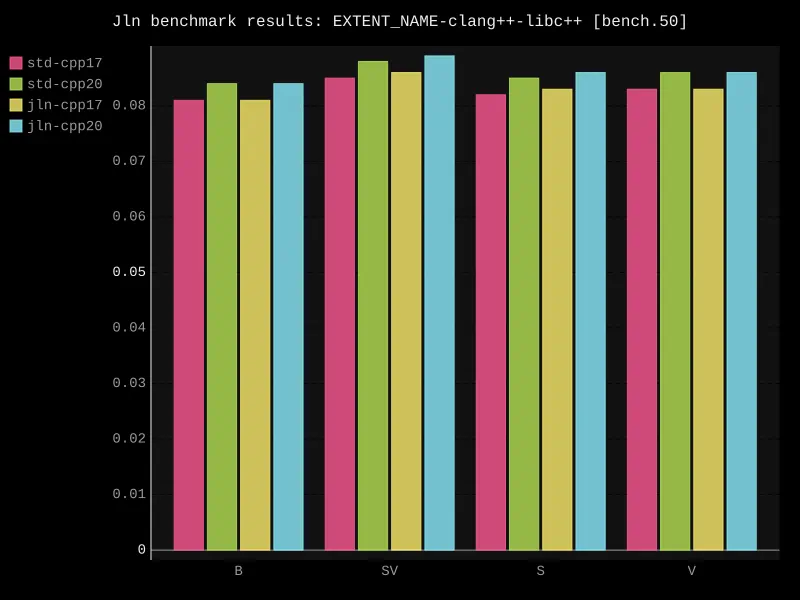
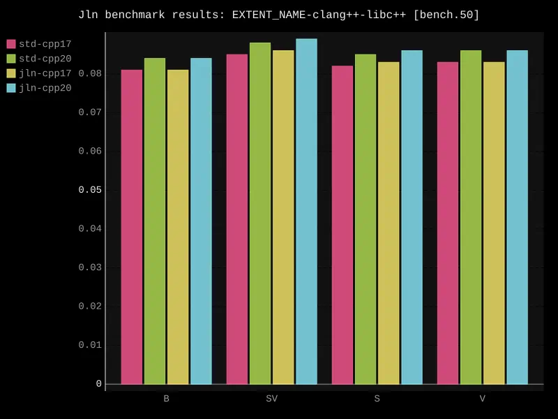


 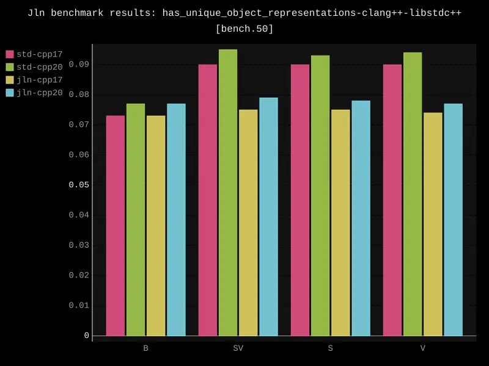
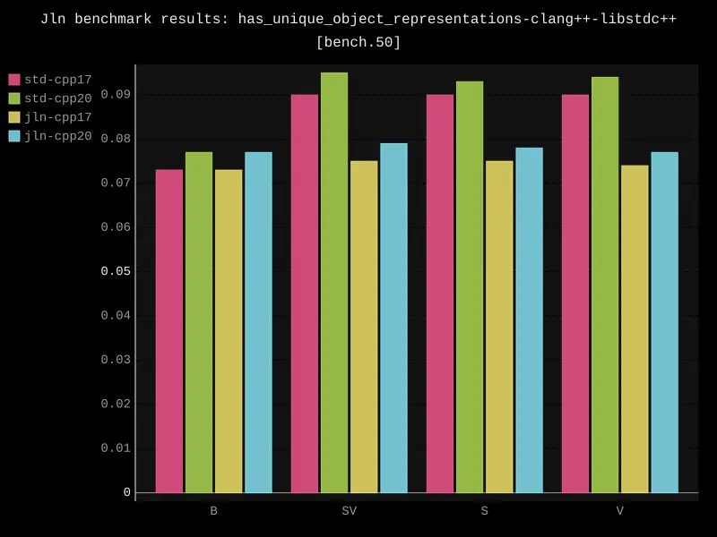


 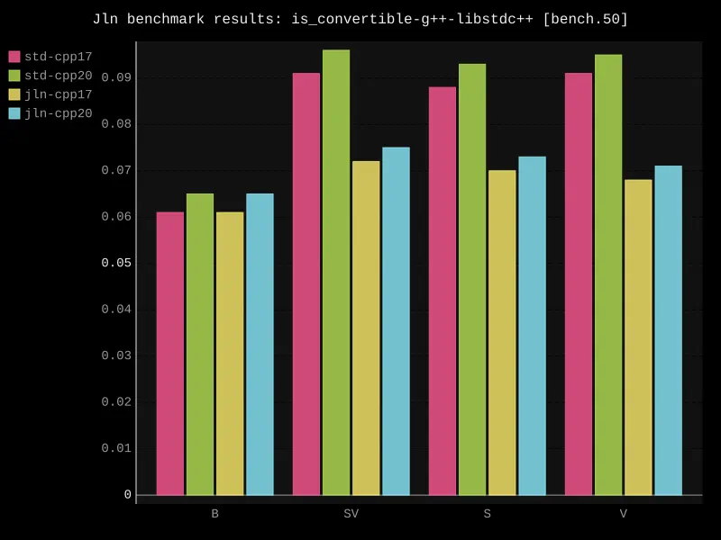
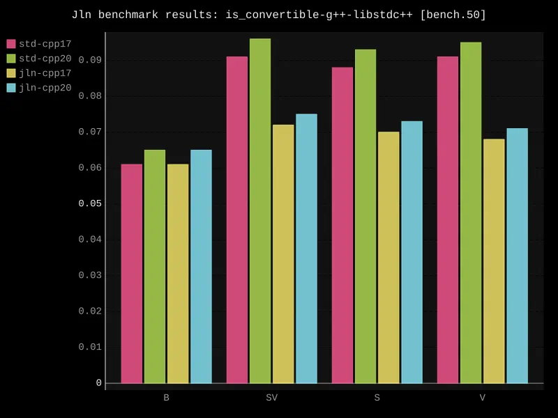


 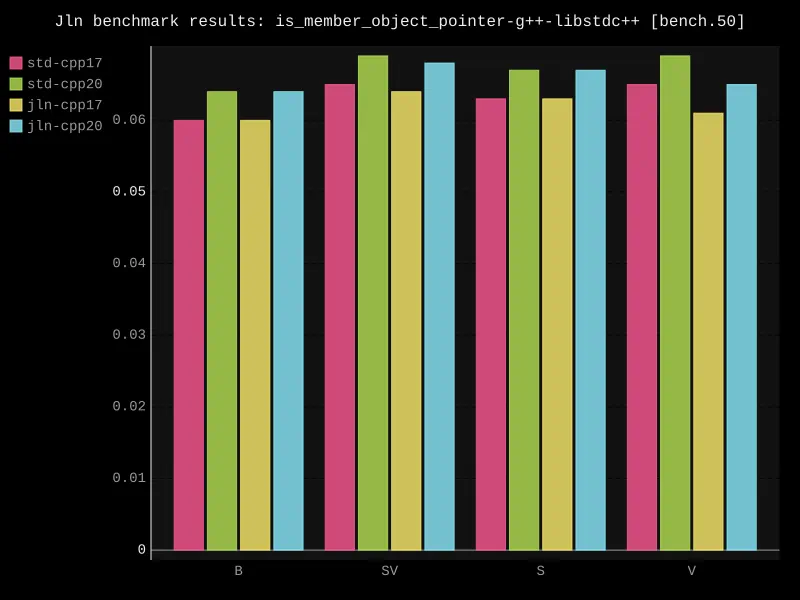
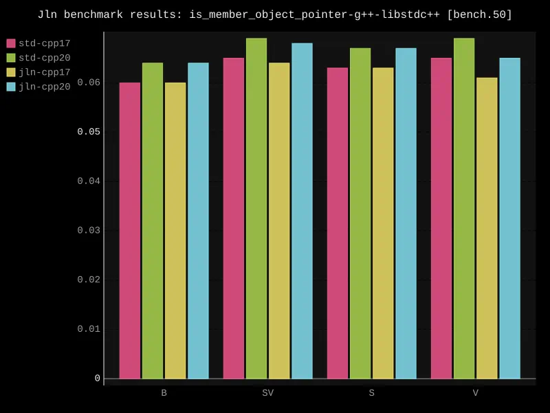


 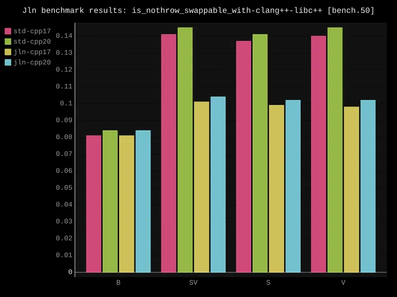
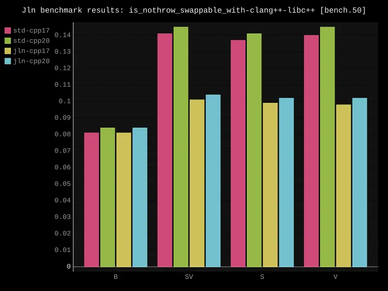


 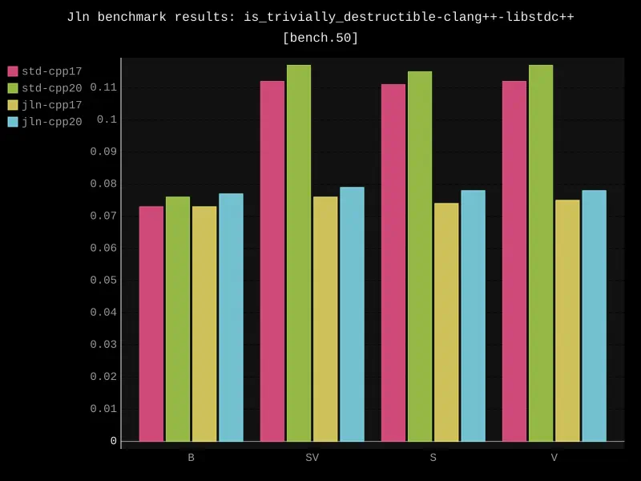
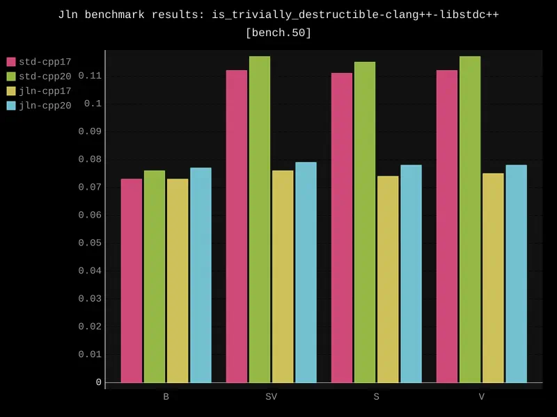